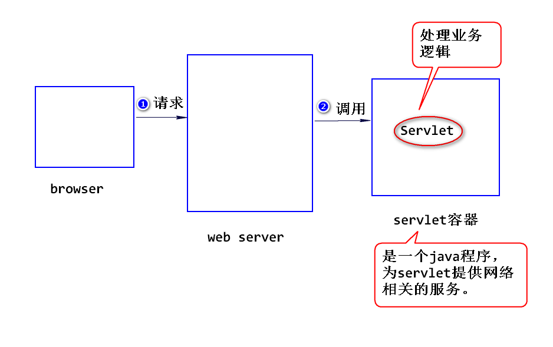
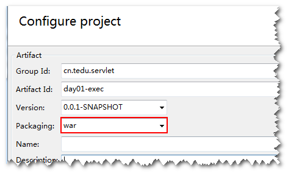
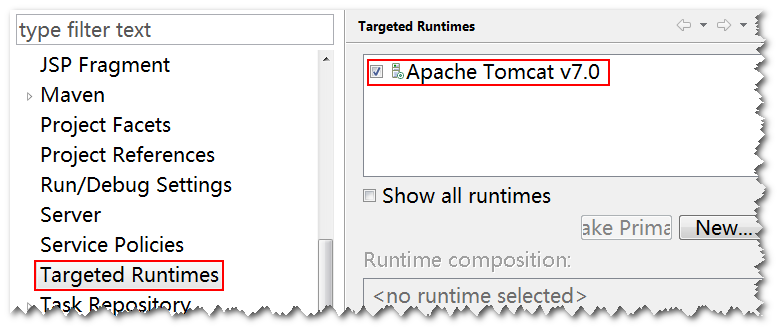

sun公司制定的一种用来扩展web服务器功能的组件规范。
web服务器只能够处理静态资源的请求(需要事先将html文件写好)，不
能够处理动态资源的请求(需要计算生成html),所以，需要扩展。
可以使用Servlet来扩展web服务器功能，当web服务器收到请求之后，
如果需要计算，则交给Servlet来处理。
注：
常见的web服务器有apache、iis、nginx等。
1)什么是组件?
符合规范，实现部分功能，并且需要部署到相应的容器里面才能运行的
软件模块。
Servlet就是一个组件，需要部署到Servlet容器里面才能运行。
2)什么是容器?
符合规范，提供组件的运行环境的程序。
Tomcat就是一个Servlet容器，为Servlet提供运行环境（提供网络
相关的服务）。

step1.写一个java类，实现Servlet接口或者继承HttpServlet类。
注:
通常选择继承HttpServlet类。
step2.编译。
step3.打包(即创建一个具有如下结构的文件夹)。
appname (应用名)
WEB-INF
classes (放 .class文件)
lib (放 .jar文件 该文件夹可选)
web.xml (部署描述文件)
step4. 部署。
将step3创建好的整个文件夹拷贝到容器相应的位置。
注：
可以将整个文件夹使用jar命令先压缩成".war"为后缀的文件,
然后再拷贝。
step5.启动容器，访问Servlet。
http://ip:port/appname/url-pattern
注:
url-pattern在web.xml当中设置。
比如，在浏览器地址栏输入 http://ip:port/day01/hello
step1.浏览器依据ip和port建立连接。
step2.浏览器将相关数据放到请求数据包里面，然后发送给服务器。
step3.服务器解析请求数据包，将解析到数据添加到request对象，
同时，创建一个response对象。
step4.服务器创建Servlet对象，然后调用该对象的service方法。
注：
服务器会将request和response对象作为参数传递过来，
开发人员只需要调用这两个对象的方法就可以了，不用考虑网
络相关的问题。
比如，要读取请求数据包中的数据，只需要调用request
对象的方法就可以了。类似的，要向浏览器发送处理结果，只
需要调用response对象的方法就可以了。
step5.服务器从response对象中获得处理结果，然后创建响应数据包并发送给浏览器。
step6.浏览器解析响应数据包，生成相应的页面。
1)含义:服务器依据请求路径找不到对应的资源。
注:
404是一个状态码，状态码是一个三位数字，表示服务器
处理请求的一种状态。
2)产生的原因:
a.请求路径写错。
要按照 http://ip:port/appname/url-pattern来写。
b.应用没有部署或者部署失败。
1)含义: 系统出错。
2)产生的原因:
a.没有严格按照规范来写代码（包括部署描述文件写错）
b.代码不严谨。
比如，对请求参数不做检查，直接做类型转换。
1)含义: 找不到处理方法。
2)产生的原因:
没有正确override HttpServlet的service方法。
写一个DateServlet，输出当前的系统日期
比如在浏览器栏输入http://ip:port/day01-exec/date， 返回 2018-09-20
step1.创建一个maven工程，注意要选war包。

step2.添加web.xml文件。

step3.指定服务器(在工程上点击鼠标右键，点击properties, 然后如下图进行选择)。 
step4.添加DateServlet。 参考代码如下:
public class DateServlet extends HttpServlet{
public void service(
HttpServletRequest request,
HttpServletResponse response)
throws ServletException,IOException{
//获得系统日期
Date date = new Date();
SimpleDateFormat sdf =
new SimpleDateFormat("yyyy-MM-dd");
String dateStr =
sdf.format(date);
//输出日期
response.setContentType("text/html");
PrintWriter out =
response.getWriter();
out.println(dateStr);
out.close();
}
}
step5.在部署描述文件(web.xml)中添加Servlet配置信息。 参数配置如下:
<servlet>
<servlet-name>dateServlet</servlet-name>
<servlet-class>web.DateServlet</servlet-class>
</servlet>
<servlet-mapping>
<servlet-name>dateServlet</servlet-name>
<url-pattern>/date</url-pattern>
</servlet-mapping>
step6.在工程上点击鼠标右键，在弹出菜单中选Run As --> Run on Server。
注：
eclipse会在容器上指定的位置创建符合servlet规范的文件
夹(默认以工程名作为应用名),并且会将.java文件编译成.class
文件并放到classes文件夹下。也就是说eclipse会简化编译、
打包、部署、运行的过程。
step7.在浏览器地址栏输入请求地址，访问该Servlet。